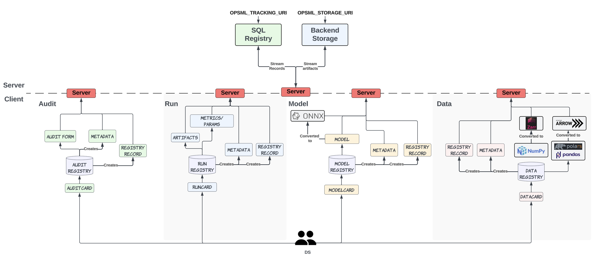
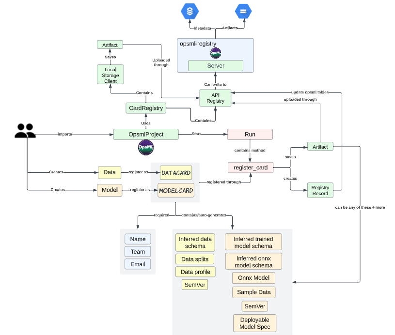

OpsML Server Setup¶
In addition to using OpsML as a stand-alone python package, it can also be used as a server (FastApi) providing a proxy interface between data scientists and backend infrastructure (recommended approach). What this means for data scientists, is that they can use OpsML as they normally would without having to set any credentials apart from the http proxy uri. For engineers, this means that they can control the infrastucture, databases, and overall server setup based on their specifications and security requirements. More on this can be found here
Registry Architecture¶

Project Run Flow Architecture¶

Setup¶
You can setup the OpsML server based on your space needs. As an example, you could follow a conventional setup whereby you host Docker images via K8s. For this setup, you would install OpsML and its dependencies into a Dockerfile and host the server on k8s.
Required Env Vars¶
As mentioned here OpsML expects 2 variables to be set (these can be set in an Dockerfile or at webserver runtime).
- OPSML_TRACKING_URI: This is the tracking uri of your backend database.
- OPSML_STORAGE_URI: This is the storage uri of your storage backend (e.g. GCP, AWS).
- OPSML_POOL_SIZE (optional): Default pool size to use with sqlalchemy engine. If not set, will default to 10.
- OPSML_MAX_OVERFLOW (optional): Default max overflow to use with sqlalchemy engine. If not set, will default to 5.
Cloud Authentication¶
OpsML aims to be cloud agnostic and currently supports GCP, AWS and Azure. To authenticate with these cloud providers, follow the individual steps below.
Google Cloud Platform¶
Required access
- It is recommended to have
Storage Object Adminroles for the service account or user that will be interacting with theOpsMLbucket. - If admin cannot be provided, the SA or user with need list, create, delete, update and get permissions on the bucket and all objects within the bucket.
Default credentials-
If no credentials are provided,
OpsMLwill look for theGOOGLE_APPLICATION_CREDENTIALSenvironment variable. If this variable is not set, it will default to the application default credentials. For more information on setting up GCP credentials, see here. If your infrastructure provisions compute resources that are automatically authenticated with GCP, you don't need to do anything. Service Account-
If you are using a service account, you can either set
GOOGLE_ACCOUNT_JSON_BASE64orGOOGLE_APPLICATION_CREDENTIALS_SAenvironment variables.GOOGLE_ACCOUNT_JSON_BASE64should be the base64 encoded json key file of the service account.GOOGLE_APPLICATION_CREDENTIALS_SAshould be the path to the service account key file. Identity Token-
Workload identity federation is not currently supported. This is due to the fact that the
OpsMLUI generates pre-signed tokens for artifact visualization in the browser. There is currently no python SDK support to generate a presigned token with a workload identity.
Amazon Web Services S3¶
Required access
- It is recommended to have
AmazonS3FullAccesspolicy for the user or role that will be interacting with theOpsMLbucket. - If admin cannot be provided, the SA or user with need list, create, delete, update and get permissions on the bucket and all objects within the bucket.
Default credentials-
If no credentials are provided,
OpsMLwill look to authenticate with the default AWS configuration. For more information on setting up AWS credentials, see here. If your infrastructure comes automatically configured with AWS credentials, then you don't need to do anything.
Service Account
- If you are using a service account, you can either set
AWS_ACCESS_KEY_IDandAWS_SECRET_ACCESS_KEYenvironment variables or you can setAWS_PROFILEto the profile name in your~/.aws/credentialsfile. - You may also supply a session token with the
AWS_SESSION_TOKENenvironment variable if you are using temporary credentials.
Identity Token- Workload identity federation is supported.
Azure Blob Storage¶
Required access
- It is recommended to have
Storage Blob Data Contributorrole for the user or role that will be interacting with theOpsMLcontainer. - If admin cannot be provided, the SA or user with need list, create, delete, update and get permissions on the container and all objects within the container.
Default credentials-
If no credentials are provided,
OpsMLwill look to authenticate with the default Azure configuration. For more information on setting up Azure credentials, see here. If your infrastructure comes automatically configured with Azure credentials, then you don't need to do anything. If using default credentials, you will need to set theAZURE_STORAGE_ACCOUNT_NAMEthat corresponds to the storage account you want to use.
Service Account
- If you are using a service account principal, you will need to set the following environment variables:
AZURE_STORAGE_ACCOUNT_NAMEAZURE_STORAGE_TENANT_IDAZURE_STORAGE_CLIENT_IDAZURE_STORAGE_CLIENT_SECRET
Identity Token-
Workload identity federation is currently supported; however, you will need to set the
AZURE_STORAGE_ACCOUNT_NAMEthat corresponds to the storage account you want to use.
Environment Variable Table¶
| Environment Variable | Description | Required | Platform |
|---|---|---|---|
OPSML_TRACKING_URI |
Tracking uri of the backend database | Yes | All |
OPSML_STORAGE_URI |
Storage uri of the storage backend | Yes | All |
OPSML_POOL_SIZE |
Default pool size to use with sqlalchemy engine | No | All |
OPSML_MAX_OVERFLOW |
Default max overflow to use with sqlalchemy engine | No | All |
GOOGLE_APPLICATION_CREDENTIALS |
Path to the GCP service account key file | No | GCP |
GOOGLE_ACCOUNT_JSON_BASE64 |
Base64 encoded json key file of the GCP service account | No | GCP |
GOOGLE_APPLICATION_CREDENTIALS_SA |
Path to the GCP service account key file | No | GCP |
AWS_ACCESS_KEY_ID |
AWS access key | No | AWS |
AWS_SECRET_ACCESS_KEY |
AWS secret | No | AWS |
AWS_SESSION_TOKEN |
AWS session token | No | AWS |
AWS_PROFILE |
AWS profile name | No | AWS |
AZURE_STORAGE_ACCOUNT_NAME |
Azure storage account name | Yes | Azure |
AZURE_STORAGE_TENANT_ID |
Service principal tenant id | No | Azure |
AZURE_STORAGE_CLIENT_ID |
Service principal client id | No | Azure |
AZURE_STORAGE_CLIENT_SECRET |
Service principal secret | No | Azure |
Server Command¶
- During local development/testing, you can spin up and test the
OpsMLserver via the CLI commandopsml-uvicorn-serverwhich will launch a Uvicorn server. - For production, it is recommended that you run Gunicorn.
- The following command can be used to run a Gunicorn
OpsMLserver.
gunicorn -k uvicorn.workers.UvicornWorker --config=./app/gunicorn_conf.py --bind=0.0.0.0:3000 "opsml.app.main:run_app(login=False)"